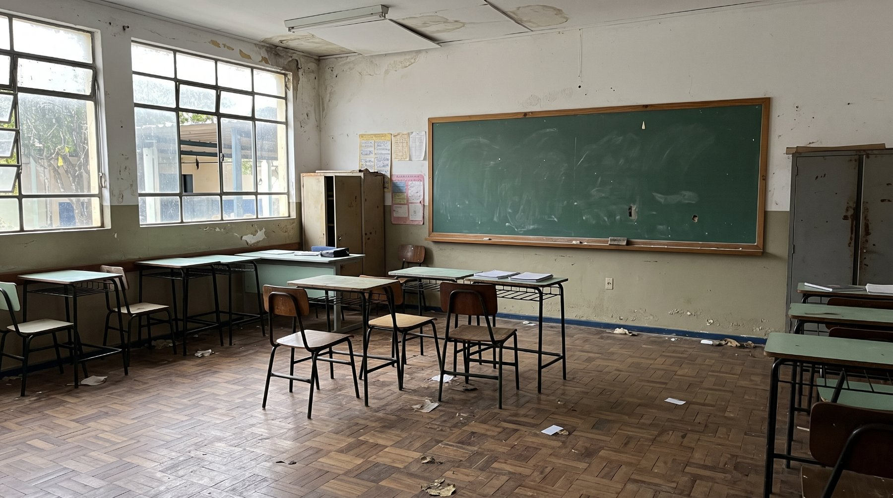

Educação
"Para não perder o réu primário": áudio vazado e fuga de 317 concursados escancaram o caos na Educação de Gravataí
Sob condição de anonimato por medo de retaliações da Lei Orgânica, educadores relatam vigilância constante da SMED, pressão por aprovação automática e falta de estrutura para os 3 mil alunos de educação especial. Dados oficiais revelam que 317 servidores concursados pediram exoneração apenas em 2025.
Redação
13 DE NOV DE 2026, 17:13
Nas salas de aula superlotadas da rede municipal de Gravataí, o esgotamento dos professores vai muito além da lousa. Nos últimos anos, uma série de decisões arbitrárias da Secretaria Municipal de Educação (SMED) tem transformado o ambiente escolar em um cenário de pressão constante, censura e adoecimento em massa.
Ouvido pela reportagem sob a condição de anonimato, um docente da rede municipal detalha um modus operandi de assédio moral desenhado para não deixar rastros. "A documentação é difícil de conseguir porque essas coisas são feitas na informalidade, justamente para não gerar provas", desabafa.
O epicentro do descontentamento recente foi o fim da eleição direta para diretores. Há cerca de dois anos, a prefeitura instituiu um curso preparatório aos sábados, ministrado e avaliado pelos próprios assessores da SMED. Embora a formação e o plano de gestão dialoguem com diretrizes federais, o fim do voto da comunidade escolar foi uma escolha puramente política da gestão municipal.
Na prática, de acordo com o docente entrevistado, a mudança criou a figura do "interventor". Os diretores escolhidos pela caneta da secretaria podem ser enviados para qualquer uma das 75 escolas de Gravataí, assumindo a gestão de comunidades com as quais não têm qualquer vínculo. "A ideia é colocar interventores mesmo. E isso vem acompanhado da perda de autonomia das escolas, que hoje sofrem uma vigilância constante da SMED até para montar uma simples grade horária", relatou o docente.
O assédio que não deixa rastros
Com as novas direções alinhadas diretamente ao gabinete, a pressão sobre os docentes escalou. Outro docente relata cobranças fora do expediente, exigência de presença em sala de aula durante a "hora-atividade" e pressão constante para aprovações automáticas — uma manobra para inflar artificialmente os índices do município no IDEB. O descaso com a categoria chegou a ser verbalizado em uma formação de matemática. Em um áudio ao qual a reportagem teve acesso, uma assessora da SMED, ao ser questionada sobre os responsáveis pelos baixos índices da disciplina, esquiva-se de apontar falhas da gestão dizendo que não falaria o que pensa "para não perder o réu primário". Na mesma gravação, a assessora chega a insinuar que parte dos professores atua na educação municipal como quem faz "bico".
A crise da inclusão: 3 mil alunos e a "pecha de capacitista"
Se a relação com a secretaria é tensa nos bastidores, dentro da sala de aula a situação beira o colapso na educação especial. O município abriga hoje cerca de 3 mil alunos com Transtorno do Espectro Autista (TEA). Para atender a essa demanda, a prefeitura dispõe de não mais que 300 monitores. Um processo seletivo recente acabou por apenas reabsorver profissionais que já atuavam de forma terceirizada, mantendo estagnado o número real de braços nas escolas. "Somos largados na escola com esses alunos, muitos com desregulação grave que descamba para agressões, sem o menor amparo", denuncia o docente. Quando os educadores apontam os riscos dessa superlotação para a própria criança autista, a gestão inverte a culpa. "Se apontamos os riscos de atendê-los sem suporte, nos dão a pecha de capacitistas." A crise logística se estende à porta da escola: recentemente, donos de vans do transporte escolar ficaram sem receber, ameaçando o deslocamento diário dos estudantes, em um imbróglio onde a prefeitura alega ter feito os repasses.
A prova documental: o adoecimento em números
O silêncio dos professores diante do sucateamento — que inclui a perda do plano de carreira e o congelamento de triênios e quinquênios — é garantido por uma "mordaça". Há cerca de três anos, uma alteração na Lei Orgânica do município abriu brecha para que servidores sejam penalizados administrativamente por criticarem a gestão nas redes sociais.
Mas os números oficiais da própria prefeitura gritam o que os professores são proibidos de falar. O Projeto de Lei 42/2026, de autoria da vereadora Vitalina Gonçalves (PT), que busca instituir diretrizes para a saúde mental dos profissionais da educação, expõe a gravidade do cenário. Baseado na Norma Regulamentadora nº 1 (NR-1) sobre riscos psicossociais, o documento revela um sistema em colapso.
Apenas no ano de 2025, a Secretaria Municipal de Educação registrou a exoneração de 317 profissionais concursados, que abriram mão de suas carreiras no município. Além da fuga de talentos, o adoecimento é generalizado: o número de servidores afastados por saúde passou de 142 em janeiro para 1.175 em outubro de 2025. O próprio projeto ressalva que esse crescimento reflete, em boa parte, o acúmulo de casos que permanecem ativos ao longo do ano: são afastamentos longos, que não se resolvem.
Os dados mostram que não se trata de indisposições pontuais. Mais de 70% dos servidores em licença-saúde ficam afastados por dois meses ou mais, sendo que 54 profissionais permaneceram afastados durante o ano inteiro. A linha de frente é a mais atingida: professores, atendentes de educação infantil, auxiliares de serviços gerais e monitores concentram a maior parte desses afastamentos longos e contínuos.
Enquanto a prefeitura celebra suas cartilhas e o suposto aumento de contratações, quem está no chão da escola relata um município que sufoca quem ensina e negligencia quem precisa aprender.
O áudio do "réu primário" e a aprovação em massa
Com as novas direções alinhadas diretamente ao gabinete, a pressão sobre os docentes escalou, culminando na exigência velada por aprovações automáticas — uma manobra institucional para inflar artificialmente os índices do município no IDEB. O que era apenas um relato de bastidor, no entanto, ganhou materialidade em uma recente formação de matemática.
Em um áudio de quase quatro minutos ao qual a reportagem da Sob Vigia teve acesso com exclusividade, o clima de retaliação e o descaso com a categoria ficam evidentes. Pressionada por professores sobre quem seriam os responsáveis pelos baixos índices da disciplina no município, uma assessora da SMED se recusa a apontar as falhas da gestão de forma inusitada: "Quando tu me perguntou o que eu acho, foi no meu direito, eu disse 'não, não vou responder. Para preservar meu réu primário'".
O bate-boca na sala de formação se intensifica quando os docentes cobram a assessora por ter insinuado que os professores da rede atuariam como quem faz "bico". Tentando se esquivar da acusação de assédio moral, a representante da SMED adota uma postura defensiva: "Eu não fiz assédio moral com ninguém, porque eu não disse que era um de vocês".
Mas o momento mais grave da gravação ocorre quando a própria assessora expõe a fratura no sistema de avaliação do município. Ao justificar sua fala, ela admite a relação nociva entre as metas da prefeitura e a aprovação indiscriminada de alunos para maquiar os números: "Os índices de IDEB divergem de aprovação e reprovação. Eles estão inversamente ligados. Isso contribui com uma aprovação em massa, que acaba transformando essas aprovações em sequelas que vão se acumulando".
Encurralada pela própria confissão diante dos professores, a assessora encerra a discussão culpando os docentes. "A pergunta foi tendenciosa e eu caí", disparou a assessora.
(Nota da redação: A revista Sob Vigia entrou em contato com a SMED e a prefeitura, porém não obteve retorno até o momento.)